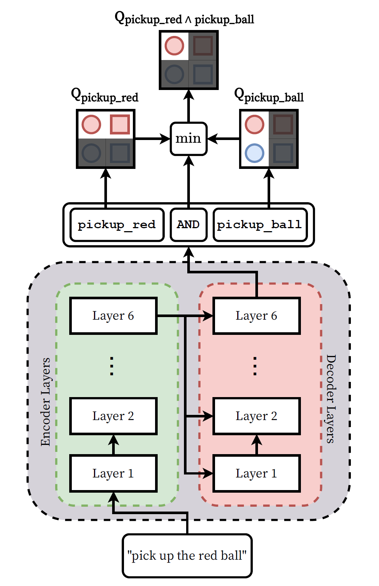
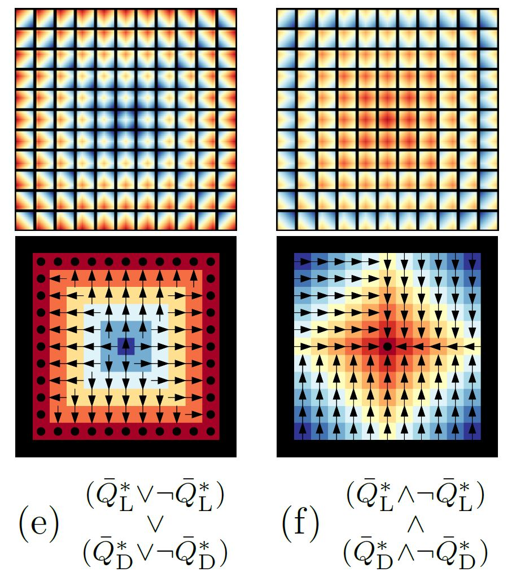
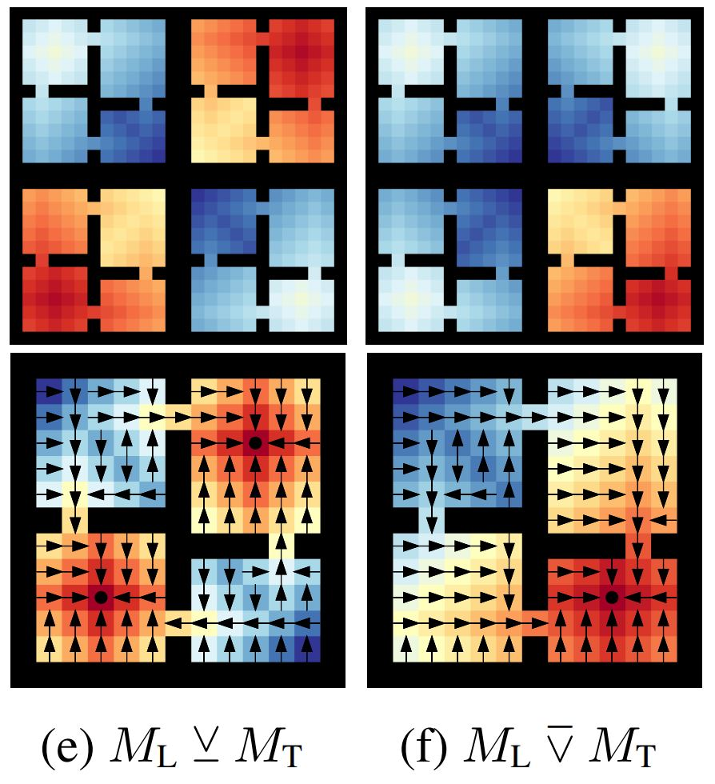
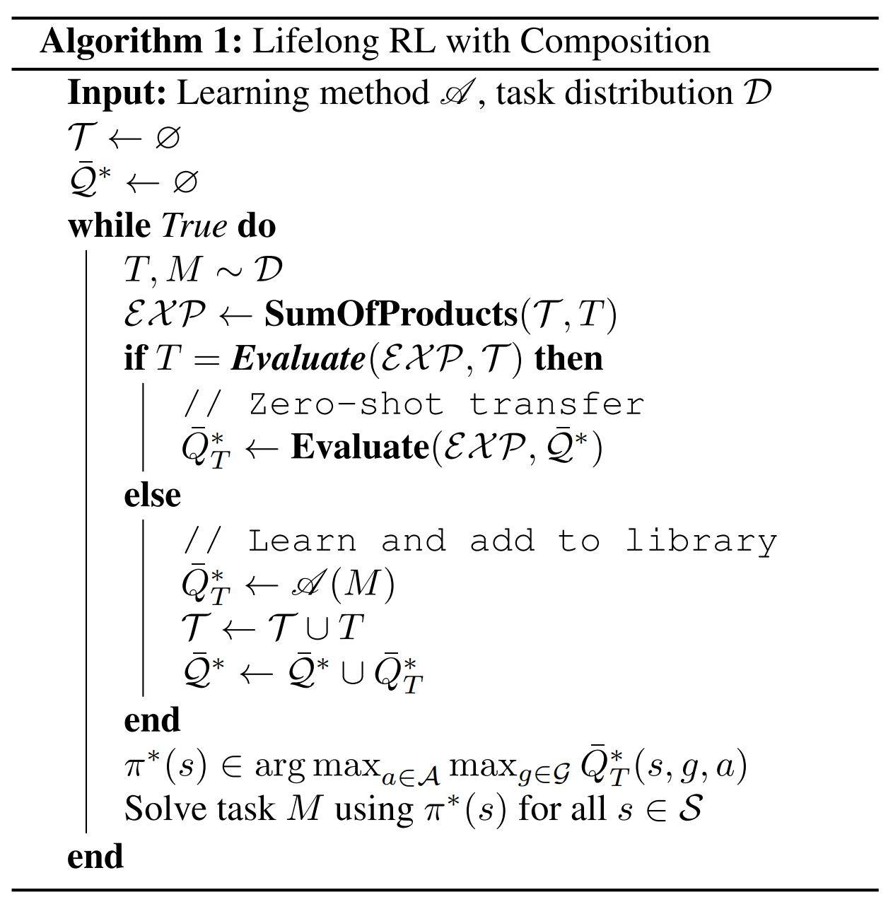
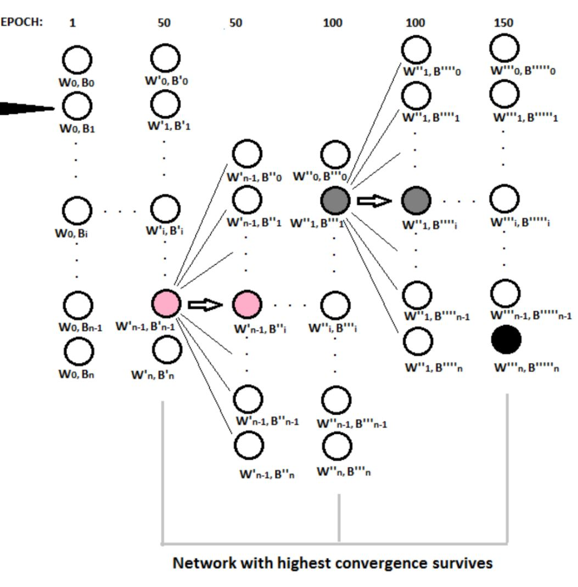

Geraud
Nangue Tasse


Welcome!
I am a Ph.D. student in Computer Science at the University of the Witwatersrand (Wits), advised by Professor Benjamin Rosman. I am also a member of the RAIL Lab research group. Before moving to Wits for my M.Sc, I did my B.Sc in Computer Science, Pure&Applied Mathematics and Physics at Rhodes University.
Interests
I have always been fascinated by the immense potential for good of creating intelligent systems---the pinnacle of which is artificial general intelligence (AGI). My main research interests lie in reinforcement learning (RL) since it is the subfield of machine learning with the most potential for achieving AGI (through embodied agents that leverage the other AI fields where appropriate).
I am currently interested in techniques that allow an agent to leverage past knowledge to solve new tasks quickly. One of my main focus is on composition techniques, which allows an agent to leverage existing skills to build complex, novel behaviours. During my M.Sc research, I introduced a formal framework for specifying tasks using logic operators (AND, OR, NOT), and how to similarly apply them on learned skills to generate provably optimal solutions to new tasks. Not only does this allow for safer and interpretable reward specification---since any new task reward function can be composed of well-understood components---it also leads to a combinatorial explosion in an agent’s ability. These are particularly important for agents in a multitask or lifelong setting.
Here are a couple milestones I think are needed on the road to AGI, and which I am currently working towards:
- Developing a provably general knowledge representation for transfer learning in RL, but not too general (it needs to be sufficiently constrained to be practical).
- Creating principled methods for efficiently learning base skills with said knowledge represention.
- Creating principled methods for agents to do any computation over skills with no/minimal further learning. That is, creating agents that are Turing complete in skill space.
Featured Research
|
 |
Learning to Follow Language Instructions with Compositional Policies
AAAI Fall Symposium on AI for HRI, 2021
We propose a framework that learns to execute natural language
instructions in an environment consisting of goalreaching
tasks that share features of their task descriptions.
Our approach leverages the compositionality of both value
functions and language, with the aim of reducing the sample
complexity of learning novel tasks.
Led by Vanya Cohen, joint with myself, Nakul Gopalan, Steven James, Matthew Gombolay, and Benjamin Rosman.
|
|
 |
A Task Algebra For Agents In Reinforcement Learning
M.Sc Thesis, 2020
We propose a framework for defining lattice algebras and Boolean
algebras in particular over the space of tasks. This allows us to formulate new tasks in terms of the negation,
disjunction, and conjunction of a set of base tasks. We then show that by learning a new type of goal-oriented value
functions and restricting the rewards of the tasks, an agent can solve composite tasks with no further learning.
Advised by Steven James and Benjamin Rosman.
|
|
 |
A Boolean Task Algebra For Reinforcement Learning
NeurIPS 2020
We propose a framework for defining a Boolean algebra over the space of tasks.
This allows us to formulate new tasks in terms of the negation, disjunction and
conjunction of a set of base tasks. We then show that by learning goal-oriented
value functions and restricting the transition dynamics of the tasks, an agent can
solve these new tasks with no further learning. We prove that by composing these
value functions in specific ways, we immediately recover the optimal policies for
all tasks expressible under the Boolean algebra
Joint work with Steven James and Benjamin Rosman.
|
|
 |
Logical composition for Reinforcement Learning
4th Lifelong Learning Workshop at ICML, July 2020
We propose an algorithm that determines whether a new task can be immediately solved using an agent’s existing abilities, or whether the task should be learned from scratch.
Joint work with Steven James and Benjamin Rosman.
|
|
 |
Hypersearch: A Parallel Training Approach For Improving Neural Networks Performance
B.Sc.H Thesis, 2018
This work proposes a novel embarrassingly parallel algorithm, Hypersearch, that takes advantage of both worlds:
hyperparameter optimization and parallel programming. Hypersearch works by training multiple neural networks
of same architecture but different hyperparameters in parallel while optimizing both networks and hyperparameters.
Advised by Mr James Connan.
|